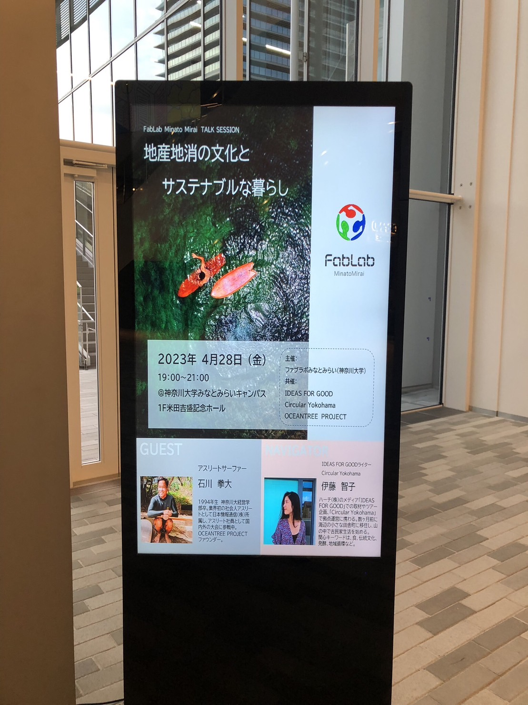
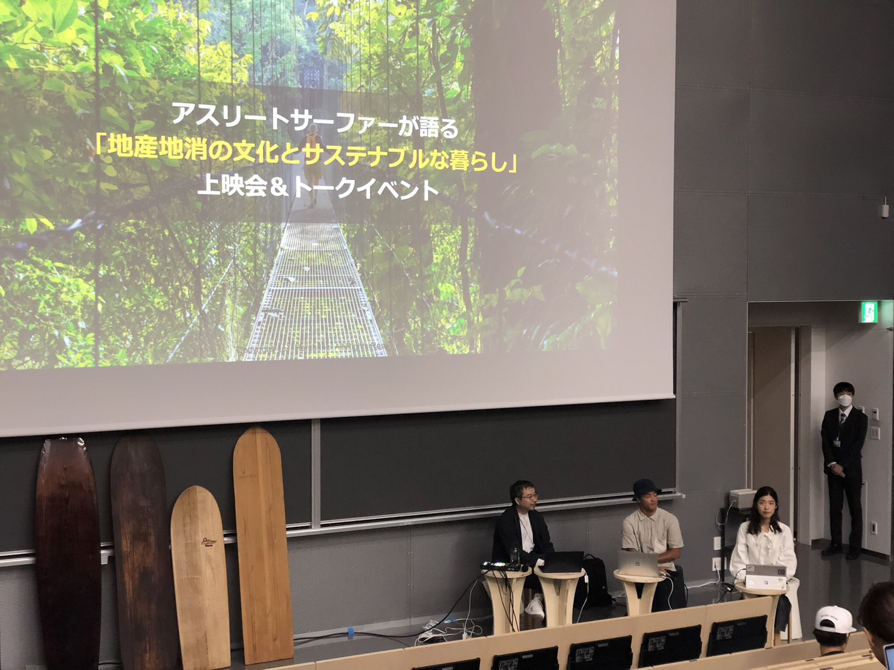
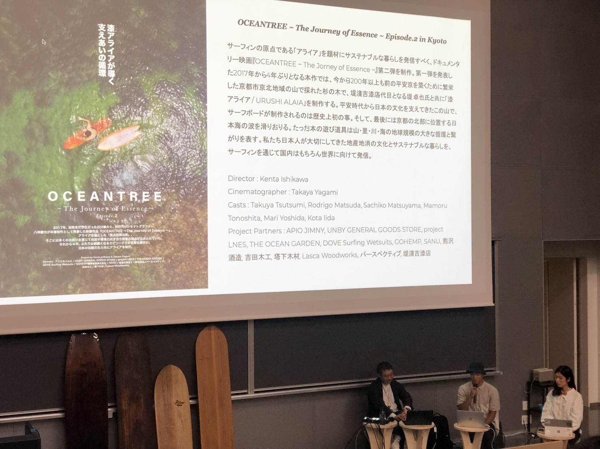
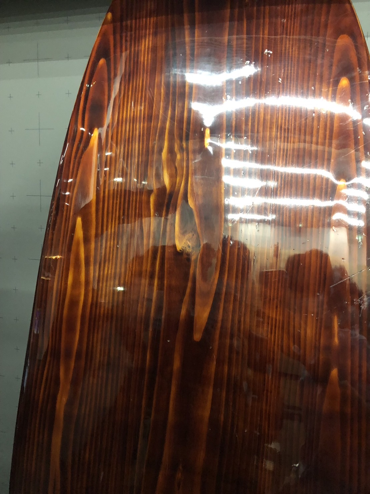
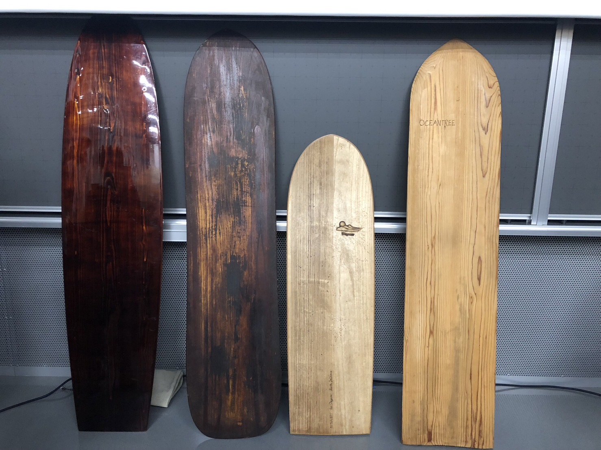

note1活動内容

| 写真 |      |
|---|---|
| メモ |
地産地消 大学23年 卒業制作として短編映画 最先端のモノじゃないと生活できないところもあるが、原点回帰の旅 酸化させて黒くする 伝統工芸 輪島塗 京北 風景 原点回帰の旅 4歳で初めて波に乗った アライア 競技とアーティスト活動 真反対 両方の活動を進めていた心境 原点をしっているからこそ強みになる 周りの協力を得るためにはどのように動いた？ スポンサー 毎日のコミュニケーション 協力を得るためのコミュニケーションではない ビーチクリーン 拾っても変わらないんじゃないか？ 7割が山から川から町からのゴミ エピソード１でエピソード２をつくりたいと思った エピソード１では伝えきれない部分があった オーストラリアでは色んなサーフィンを乗っていた競技用 アライア ひとつじゃなくてもいい クリエイティブ 他と比較しない 難しい みんなうまく乗ろうとする うまく乗らなくていい 京都 京北 漆屋さんが京都出身 京都でやって感じたこと制作は日本でいいよね 世界でいいよね思うようになった 漆が世界で評価されている 日本のモノが世界で評価されている 元々波に乗る文化が日本にはあった サステナビリティ 昔の人は当たり前でやるしかなかった 今から昔をみればサステナビリティに感じることがある 未来から今を見直した時にも今やっていることがサステナビリティに感じることがあるかも サーフィン 海・自然と関われる 究極な事を云うと地球上にあるモノは自然 そこの場で作って、遊ぶことの難しさは？ 材料の調達する難しさや環境が揃わない、整わない難しさ 他のモノを知っているとそれがないことが不便に感じる 海の危険さから 生き物としての本質 NTT IBM合同会社 アスリートとして広報活動 地産地消の大切さ 身近なモノの大切さ 目の前のモノ、人、空間に大切さを感じるか 自分が気持ちいと思えるバランスのところを探している 自分のバランス、環境とのバランス 対話、可視化していく 原点回帰の旅 旅は常に学びたい 常に学びの意識を持っている |
| 印象深かったこと |
「他のモノを知っているとそれがないことが不便に感じる」 印象的なフレーズでした。比較する大変さ、比較される大変さを感じました。 比較されても、受け取り側のナンバーワン、オンリーワンを与えるコトの重要性を感じました。 |